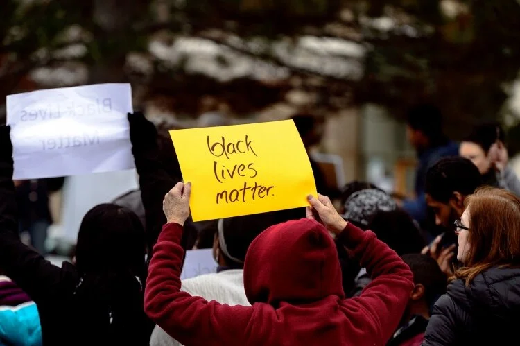
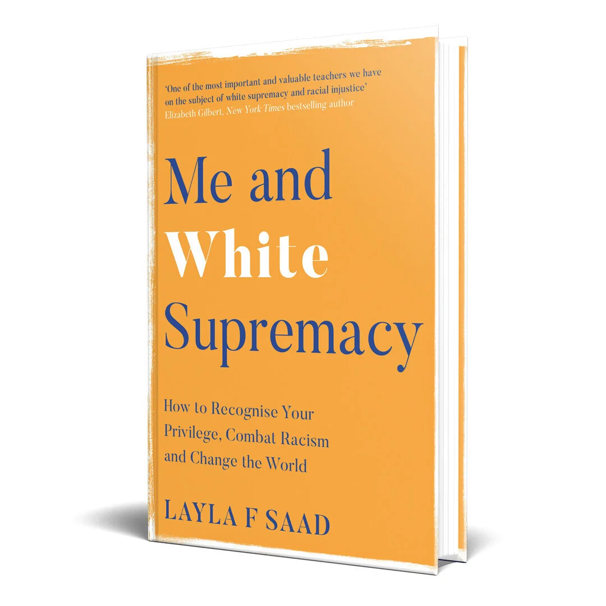
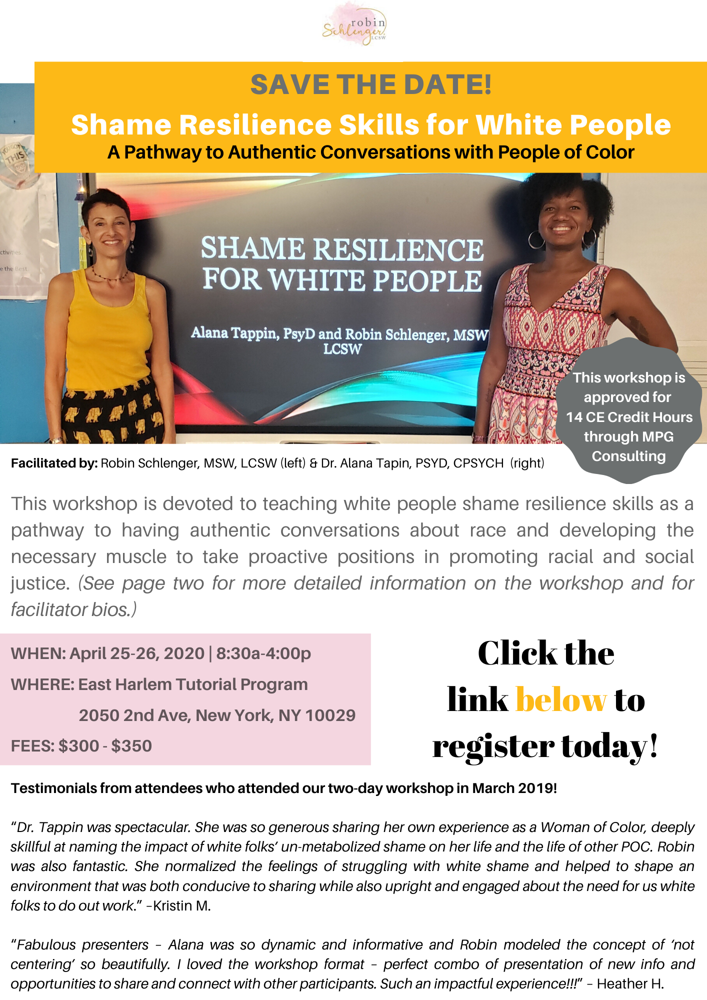
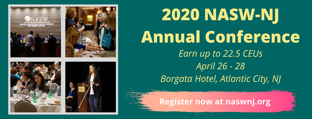

2020-03-01
Celebrating Black History Month By Challenging The Ways I Participate In White Supremacy Culture
I have been reflecting lately on an acronym that one of my old therapists introduced me to. The acronym is AFOG and it stands for Another F---ing Opportunity for Growth. I have been embracing AFOG a lot lately. I feel like I got whiplashed from all the “opportunities” I have been given this past month to unpack the many ways that I perpetuate white supremacy. It is so insidious and deeply rooted in my existence that I often can’t even see it or picture another way of being. Each and every AFOG has not only created an opportunity for growth but also has led me one step closer to reclaiming my humanity. I hope that the following resources bring you your own AFOG’s and lead you back to your own humanity.
See you on the journey,
Robin

“10 Ways White Supremacy Wounds White People: A Tale of Mutuality” by Greg Elliott
I was looking for an article or piece of work that provided some concrete examples of how white supremacy harms white people for a presentation I’m doing with a colleague. We already have plenty of material on the ways it wounds People of Color but we wanted to balance that with the way it also wounds white people. That is how I came across this article and the video that follows.
I sometimes find it challenging and uncomfortable to talk about the ways white people are wounded by white supremacy, especially around people of color. It took me a while to understand, accept and own it myself. Reading Joseph Brandt’s book, “Dismantling Racism; The continuing challenge to white America” (see June 2019 blog: https://robinschlengerlcsw.com/blog/2019/6/6/more-resources-for-journey) really helped me begin to understand the ways in which white people are captives in our own “comfortable prisons.” This article reminds me that white people also need to free ourselves.
https://www.afsc.org/blogs/acting-in-faith/10-ways-white-supremacy-wounds-white-people-tale-mutuality
Embedded media (requires internet): //cdn.embedly.com/widgets/media.html?src=https%3A%2F%2Fembed.ted.com%2Ftalks%2Fmichelle_johnson_there_is_no_neutral&display_name=TED&url=https%3A%2F%2Fwww.ted.com%2Ftalks%2Fmichelle_johnson_there_is_no_neutral&image=https%3A%2F%2Fpi.tedcdn.com%2Fr%2Ftalkstar-photos.s3.amazonaws.com%2Fuploads%2Fb62616e8-399a-4f7f-95d1-8821ebc1f4a5%2Fmqdefault.jpg%3Fh%3D315%26w%3D560&key=61d05c9d54e8455ea7a9677c366be814&type=text%2Fhtml&schema=ted&wmode=opaque
Michelle Johnson TEDx Talk “There is No Neutral”
I had goosebumps during this entire 16-minute video as Michelle Johnson spoke her truth. I heard it, I understood it and it didn’t feel good. It’s not supposed to! Michelle talks about the ways white supremacy is literally killing her and other people of color. She also talks about how she uses yoga to heal and not hide from it. It made me think about the term spiritual bypassing and how some of us who call ourselves spiritual people think we can “meditate away” racism and inequity without doing any of the actual work. Michelle’s talk painfully and clearly points to the fact that not only have white people appropriated the cultures and practices of BIPOC (Black, Indigenous, People of Color), but we have intentionally stolen and centered those same practices on whiteness, leaving out the very people who created them.

“Me and White Supremacy” by Layla F. Saad: I’ve gone through this workbook twice already and I’m so excited to announce that it's been published as a book. Layla F. Saad created and started this as a 28-day challenge to help combat racism. This workbook is one of the ways I continue to challenge myself to look inward so that I can become more aware of the many ways that I live, breathe and act out white supremacy. The first time I did the workbook, I found it difficult to get past the first few layers of my internalized racial superiority which was a lesson in itself. I did it again a few months ago and found myself digging up more and getting to some very raw places. I will probably do it again in another year so that I don't get too comfortable.
https://www.meandwhitesupremacybook.com/

https://www.eventbrite.com/e/shame-resilience-skills-for-white-people-tickets-82815247635?aff=ebdssbdestsearch

Dr. Alana Tappan, PsyD, Cpsych & I will be presenting at the NASW-NJ 2020 Annual Conference on Monday, April 27th from 1-5pm. This workshop is designed to help white people become more aware of the many ways that shame blocks their ability to stay actively engaged in meaningful racial conversations.